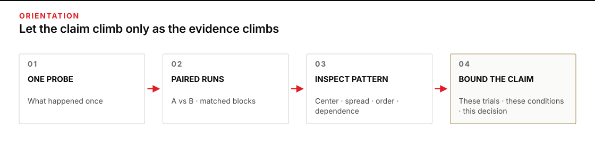
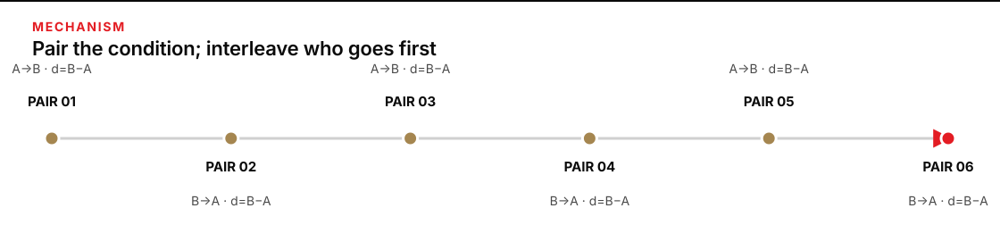
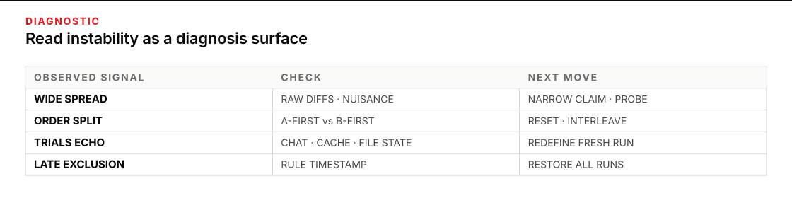

When one good run is carrying too much weight
You have a measured before-and-after result, but someone is already speaking as if the changed harness will behave that way every time. Give this work 45–60 minutes. You will leave with a repeated-run worksheet that preserves run identity, pairing, order, nuisance conditions, observed spread, exclusions, and a conclusion no larger than the evidence.
Complete the initial baseline, wall change, cold rescore, and restart proof in P2 · Going deeper first. Continue only after those artifacts exist. Repeated runs do not rescue a soft pass condition, a leaked case, a changed model tier, or a metric that measures the wrong thing. They can show whether a valid measurement appears stable under the conditions you actually repeat.

Figure transcript
Stage one is one probe: report only what happened in that run. Stage two is repeated pairs: match version A and version B on the same input and conditions while balancing order. Stage three is pattern inspection: keep raw differences visible and inspect center, spread, direction, order, dependence, and exclusions. Stage four is a bounded claim: name the observed trials, conditions, uncertainty, and allowed decision. A bad acceptance test remains bad at every stage, and no number of reruns turns it into a valid measure.
Build evidence one paired block at a time
A single result answers one narrow question: what happened in this run? It does not reveal how often the result changes, whether the second condition inherited an advantage from the first, or whether the observed difference is large beside ordinary run-to-run movement. Treat the first result as a probe—an observation that shapes the next test—not as proof of a stable capability.
Pair the comparison before you summarize it
A pair is one result from version A and one result from version B under matched conditions. Hold the input, scoring rule, evaluator, and important operating conditions fixed within that pair. Then calculate the paired difference:
paired difference = B result − A result
If higher is better, a positive difference favors B, zero is a tie, and a negative difference favors A. If lower is better—elapsed time or error count, for example—write the direction explicitly before running anything. Never let the sign convention change after the results arrive.
Pairing matters because conditions that are not the object of the comparison can still move the score. Statisticians call these nuisance factors: time of day, evaluator, input instance, system load, source freshness, or anything else that can alter the response without being the harness change you care about. NIST’s guidance on paired observations compares corresponding measurements through their differences, while its guidance on blocking keeps important nuisance conditions together. The operator translation is simple: compare like with like, then keep the pair visible.
Balance order so “second” does not masquerade as “better”
If every pair runs A and then B, version B is tangled with being second. The second run might inherit a warmed cache, a refined evaluator, a recently opened source, a less tired operator, or contamination from the first output. That inherited influence is an order effect. When state from the first run changes the second, the specific mechanism is often called carryover.
For a small operational comparison, alternate or randomize the within-pair order while keeping the counts balanced: A→B in one pair, B→A in the next. Count balance is necessary but not sufficient. A schedule of A→B, A→B, B→A, B→A has equal counts but groups order assignment with time; interleave the assignments or randomize them under an equal-count constraint across the pair sequence. Record the actual order, not only the intended schedule. This discipline does not prove that carryover is absent. It stops one version from owning the second position and gives you a surface on which an order signal can appear. NIST emphasizes run-order randomization because drift can otherwise be confounded with the factor being studied; a run-order plot is one way to expose that structure.
Know where dependence enters
The two observations inside a pair are deliberately related: they share the same input and matched conditions. Across pairs, however, you need fresh trials if you want each pair to add information. Reusing the same chat, accepting an output that quotes a prior output, carrying forward generated files, or scoring several runs from one cached intermediate state can make later trials depend on earlier ones. Six rows created from one evolving session are not six fresh pieces of evidence.
Reset the state that could carry influence, then record what you reset. If a reset is impossible, name the dependence in the conclusion. Do not silently count dependent reruns as independent evidence. Many statistical procedures assume observations are uncorrelated over time; NIST names that assumption explicitly in its product-comparison guidance.
Describe the runs before you infer beyond them
Descriptive evidence reports what occurred in the observed trials: the raw differences, their middle, their spread, their direction, and any visible order pattern. Inferential evidence uses a justified sampling model and assumptions to make a claim about a wider population of possible runs. A handful of convenient reruns can support a careful descriptive decision; it does not automatically support a probability, confidence interval, or universal capability statement.
Keep the raw paired differences visible. Then use summaries that a skeptical peer can reproduce:
- Median difference: sort the differences and take the middle value, or average the two middle values when the count is even. The median is less vulnerable than the mean to one extreme run.
- Observed span: report the minimum and maximum difference. This is not a confidence interval; it is simply the range you saw.
- Direction count: count improvements, ties, and regressions. This keeps an attractive average from hiding repeated losses.
- Median absolute deviation (MAD): take each difference’s absolute distance from the median, then take the median of those distances. MAD describes typical spread around the observed middle without giving one extreme result disproportionate influence. NIST discusses MAD and other robust measures in its measures-of-scale guidance.
There is no universal honest run count. The needed count depends on the decision, the size of variation, the smallest difference that matters, the consequence of a wrong call, and the sampling assumptions you can defend. NIST’s sample-size guidance makes those dependencies explicit. For this operator exercise, small samples are a reconnaissance instrument: enough to reveal instability and sharpen the next move, not enough to manufacture certainty.

Figure transcript
Pair one runs A first and B second. Pair two runs B first and A second. Pair three runs A first and B second. Pair four runs B first and A second. Pair five runs A first and B second. Pair six runs B first and A second. Each pair keeps the same input, scoring rule, evaluator, and important nuisance conditions. The calculated quantity is always B minus A, regardless of run order. Interleaving the count-balanced order assignments prevents either assignment from occupying only the early or late pairs. It does not by itself prove independence or remove carryover; fresh state between pairs and an explicit reset record are still required.
Worked case: the handover note that looked decisively better
A service team uses a harness to turn a frozen set of synthetic status fragments into a shift-handover note. Ten prewritten acceptance checks score factual fidelity, ownership, time references, unresolved risks, and a usable next action. Version A is the current harness. Version B contains one deliberate instruction change. Higher scores are better.
The first cold comparison returns A = 5 and B = 7. That +2 is useful: the change deserves another probe. It is not yet a stable-effect claim. The team predeclares six complete pairs as a time-boxed reconnaissance budget—not as a statistical sufficiency threshold. It alternates order, begins each run in a fresh isolated session, restores an empty output location, uses the same frozen source packet and check set, hides the version label during scoring, and records every result. Pair identity is the block; the A and B runs within it share the same evaluator and operating window.
| Pair | Run order | A score / 10 | B score / 10 | B − A | Nuisance note |
|---|---|---|---|---|---|
| 01 | A→B | 5 | 7 | +2 | Fresh; labels hidden |
| 02 | B→A | 6 | 8 | +2 | Fresh; labels hidden |
| 03 | A→B | 4 | 7 | +3 | Fresh; labels hidden |
| 04 | B→A | 7 | 7 | 0 | Fresh; labels hidden |
| 05 | A→B | 5 | 6 | +1 | Fresh; labels hidden |
| 06 | B→A | 6 | 8 | +2 | Fresh; labels hidden |
Audit the arithmetic
The raw differences are +2, +2, +3, 0, +1, +2. Sorted, they are 0, +1, +2, +2, +2, +3. The two middle values are both +2, so the median paired difference is +2 checks. The observed span is 0 to +3. Five pairs favor B, one ties, and none favors A.
For MAD, measure each difference’s distance from the median of +2: 0, 0, 1, 2, 1, 0. Sorted, those distances are 0, 0, 0, 1, 1, 2; the middle two are 0 and 1, so MAD is 0.5 check. That decimal comes from the midpoint of two central distances, not from half-check scoring precision. The A-first differences are +2, +3, +1, with median +2. The B-first differences are +2, 0, +2, also with median +2. That split shows no obvious order separation in these six pairs. It does not prove that order is harmless.
Diagnostic example: cherry-picking the winning pair
An eager operator selects pair 03 and reports, “Version B improves the handover by three checks.” The sentence is arithmetically true for that run and misleading as a summary. Pair 03 is the largest observed difference. Choosing it after seeing all six is cherry-picking: the selection rule favors a winner and discards the variation that qualifies it.
The symptom is easy to spot: the headline number cannot be reconstructed from a predeclared summary rule, and five logged pairs have vanished from the claim. Recovery is not to average away the mistake. Restore every run, show the raw differences, apply the summary chosen for all pairs, and narrow the language.
Across six alternated-order, fresh-session pairs on one frozen handover packet, version B scored higher in five and tied in one. The median paired difference was +2 checks, with observed differences from 0 to +3 and MAD 0.5. This supports a limited shadow-use trial on this packet; it does not establish performance on other packet shapes or a long-run improvement probability.
That statement is less dramatic and more useful. It separates observed evidence from an inference the design did not earn. Work on non-deterministic machine-learning systems reaches the same warning from larger studies: Reimers and Gurevych show why score distributions across executions matter, and Bouthillier and colleagues model how multiple sources of variation affect benchmark comparisons. Their research does not prescribe a magic count for this desk test; it supports the deeper discipline of exposing variation instead of hiding it behind one winner.

Figure transcript
Wide spread calls for inspection of raw paired differences and nuisance conditions, followed by a smaller claim and another controlled probe if the decision requires it. An A-first versus B-first split calls for inspection of sequence and carryover, followed by a stronger reset and a predeclared count-balanced schedule interleaved or randomized across pair sequence. Repeated outputs that quote or inherit prior state reveal dependence; redefine a fresh trial boundary before counting more evidence. Exclusions invented after scores are visible signal cherry-picking; restore every run and apply only the predeclared rule. In every row, the immediate response is diagnosis and claim restraint, not automatic deployment or silent deletion.
Diagnose a comparison before you accept its headline
Plan 20 minutes. A review team compares two versions of a short after-action summary on a fixed synthetic evidence packet. The score is acceptance checks passed out of 10, and higher is better. Each row is a fresh pair; the within-pair order shown is the actual order.
| Pair | Order | A | B | Your B − A |
|---|---|---|---|---|
| 01 | A→B | 6 | 8 | |
| 02 | A→B | 7 | 9 | |
| 03 | B→A | 7 | 7 | |
| 04 | B→A | 8 | 7 |
- Calculate every paired difference and keep all rows visible.
- Find the median difference, observed span, MAD, and counts of improvement, tie, and regression.
- Split the differences by order: A-first versus B-first. What diagnostic signal appears?
- Write one descriptive sentence the rows support and one inferential sentence they do not support.
- Choose the next move: deploy, hold, rerun with a stronger reset and an interleaved-or-randomized order plan, or abandon the metric. State the stop condition.
The differences are +2, +2, 0, −1. Sorted, they are −1, 0, +2, +2, so the median is +1. The observed span is −1 to +2. Distances from the median are 1, 1, 1, 2, giving MAD 1. Two pairs improve, one ties, and one regresses.
The A-first differences are +2, +2, with median +2. The B-first differences are 0, −1, with median −0.5. Equal counts do not make the sequence clean: the two A-first assignments occurred in the early pairs and the two B-first assignments occurred in the late pairs. The observed A-first/B-first split is therefore confounded with pair sequence and time. These rows cannot distinguish a within-pair order or carryover effect from drift or another time-linked condition. With only two pairs in each order, they do not prove any of those mechanisms; they do wound the headline.
A defensible description is: “In four fresh pairs, the median observed difference was +1 check, with results from −1 to +2; both A-first pairs favored B, while neither B-first pair did.” The rows do not support “B has a 75% chance of winning,” “B will improve future packets by one check,” or a statistical-significance claim.
The next move is to hold deployment and inspect the reset and sequence trail. Before another run, write a count-balanced schedule whose A-first and B-first assignments are interleaved across pair sequence, or randomize those assignments under an equal-count constraint. Name the state reset, record the actual schedule, and keep the metric fixed. If the split persists after that predeclared follow-up, stop adding convenient runs and return the unresolved mechanism to the evaluation owner. Return sooner if the next trial would touch real operational data, exceed the approved evaluation budget, or influence a consequential workflow before the signal is understood.
Copy the repeated-run worksheet
Write exclusions and the stop rule before the first result. A failed or interrupted run still belongs in the trail; mark its outcome and reason. Exclude only under the predeclared rule, never because the score is inconvenient.
# Repeated-run record
Decision this comparison informs:
Version A / version B:
Frozen input or case ID:
Metric and direction (higher/lower is better):
Smallest difference that would change the decision:
Conditions held within each pair:
State reset between pairs:
Order plan:
Exclusion rule written before runs:
Budget / stop condition:
| Pair | Run ID | Position 1 / 2 | Version | Input ID | Nuisance conditions | Metric result | Anomaly | Excluded? + predeclared reason |
|------|--------|----------------|---------|----------|---------------------|---------------|---------|--------------------------------|
| | | | | | | | | |
Paired differences (B − A):
Median difference:
Observed span (minimum to maximum; not a confidence interval):
MAD:
Direction count (B better / tie / A better):
A-first summary / B-first summary:
Run-sequence or dependence signal:
All exclusions with timestamps and reasons:
Descriptive conclusion about these recorded trials:
Claims this record does not support:
Decision: continue / hold / another probe / return to human:
Next discriminating probe:
Return-to-human trigger and owner:Four rules for defensible repeated-run claims
- Six identical deterministic replays establish repeatability under one fixed condition; they do not sample input, evaluator, environment, or seed variation.
- Ten rows from one chat corrected after row three form one evolving dependent sequence, not ten fresh trials. Preserve the rows, mark the intervention, and restart with a real trial boundary.
- If every B run came second, version and order are confounded. Report that limitation and use an interleaved or randomized equal-count order plan for the next comparison.
- A run with a missing required source stays in the trail. Exclude it from the summary only under a rule written before the runs, and always preserve the event and reason.
Carry repeated-run humility to your desk
Choose one low-consequence comparison already measured once: a brief format, a triage rule, a review instruction, or another bounded harness change. Keep the acceptance test fixed. Time-box the work, run complete A/B pairs under a count-balanced order schedule that is interleaved or randomized across pair sequence, and stop when the budget expires rather than adding runs until the answer looks favorable. Fill the worksheet as the runs happen.
Your desk claim should name the observed packet, pair count, reset conditions, median difference, observed span, direction count, order signal, exclusions, and the decision the evidence permits. If the result varies more than the decision margin, changes sign by order, or depends on a state you cannot reset, hold the capability claim and design the next discriminating probe.
Return to a human owner when the comparison would affect safety, personnel, finance, legal posture, access authority, or a live operational decision; when the next run needs data or permissions outside your authority; or when an inferential claim is required. A statistician, evaluation owner, or domain authority may need to set the sampling frame, sample size, and acceptable error rates. Repeated runs make uncertainty visible. They do not transfer ownership of the verdict.
Sources
- NIST/SEMATECH · Analysis of paired observations — pairing corresponding measurements and analyzing their differences.
- NIST/SEMATECH · Randomized block designs — holding important nuisance factors together and randomizing what cannot be blocked.
- NIST/SEMATECH · Detecting drift in run order — why time order can become confounded with the factor under study.
- NIST/SEMATECH · Measures of scale — range, median absolute deviation, and their limits.
- NIST/SEMATECH · Sample sizes required — why sample size depends on variation, detectable difference, and error risks.
- Reimers & Gurevych · Reporting Score Distributions Makes a Difference — primary empirical evidence that a single execution can misrepresent non-deterministic system performance.
- Bouthillier et al. · Accounting for Variance in Machine Learning Benchmarks — multiple variation sources and their effect on benchmark comparisons.
- Dror et al. · The Hitchhiker’s Guide to Testing Statistical Significance in NLP — assumptions and test selection when an inferential claim is actually required.